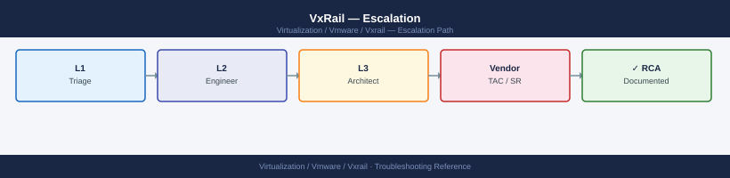

VxRail — Escalation¶

Before you begin¶
- Access required: vSphere Client access (admin credentials); SSH to VxRail Manager VM and ESXi hosts; iDRAC access to affected nodes; Dell support account at dell.com/support linked to the cluster's node service tags
- Check SupportAssist first: VxRail nodes have SupportAssist embedded in iDRAC; for hardware faults (disk, PSU, DIMM), a case may already exist. Check dell.com/support → My Cases before opening a duplicate
- Do NOT retry a failed LCM upgrade without Dell direction — an incomplete retry on a partially upgraded cluster can push nodes to three different software versions, making the cluster config inconsistent
- Do NOT evacuate a degraded vSAN node without Dell direction — evacuating when absent objects already exist can remove the last copy of a component
Pre-Escalation Self-Check¶
Run these before opening the case.
| Check | Command / Location | Expected result |
|---|---|---|
| VxRail version | VxRail Plugin → System → Software Version | Note full version string |
| Cluster node health | vCenter → Cluster → Hosts | All nodes Connected |
| vSAN health overview | vCenter → Cluster → Monitor → vSAN → Health | All checks green |
| vSAN absent objects | vCenter → Cluster → Monitor → vSAN → Virtual Objects | Zero absent or degraded objects |
| LCM pre-check status | VxRail Plugin → Lifecycle Management → Last pre-check | All checks passed |
| iDRAC alerts | iDRAC UI → System → Overview | No critical hardware faults |
| SupportAssist case | dell.com/support → My Cases | No existing case for this fault |
| ESXi host uptime | esxcli system stats uptime get on each host |
Consistent with known reboots |
Step-by-Step Data Collection¶
1. Note the VxRail version and node service tags¶
In vCenter vSphere Client:
1. Click the VxRail plugin menu icon
2. Navigate to System → Software Version → note the full VxRail version string
3. Navigate to System → Cluster Info → note the cluster serial number
4. Navigate to Hosts → select each node → Details → note the service tag (Dell hardware serial)
Product: VMware ESXi
Version: 7.0.3
Build: 19482537
Update: 3
Patch: 0
Vendor: VMware
Release Date: 2023-09-14
Common errors
Could not connect to the local host. Error: Unable to establish a connection to the host. — Ensure the ESXi host is powered on and accessible, or run the command directly from the ESXi console rather than remotely.
Unknown command or namespace esxcli system version get — Verify you are running this command on an ESXi host (not vCenter); older ESXi versions may require vmware -v instead.
2. Generate the VxRail support bundle¶
In vCenter vSphere Client:
1. Click the VxRail plugin menu icon
2. Navigate to Support → Generate Support Bundle
3. Wait for generation (5–15 minutes)
4. Click Download and save the bundle to your workstation
This bundle contains: VxRail Manager logs, ESXi logs, vSAN state, LCM history, iDRAC events, and hardware inventory for all nodes.
3. Run vm-support on each affected ESXi host¶
# SSH to each affected ESXi host as root
ssh root@<esxi-host-ip>
# Generate the ESXi support bundle
vm-support
# Find the bundle (saved to /var/core/ or /scratch/)
ls -lh /var/core/
# Example: vm-support-esx-host01-2026-06-15--09.30.tar.gz
# Copy to workstation
scp root@<esxi-host>:/var/core/vm-support-*.tar.gz /tmp/
root@esxi-host01.lab.local [ ~ ]# vm-support
Generating support bundle, please wait...
Gathering system logs...
Gathering configuration files...
Gathering performance data...
Support bundle completed successfully.
Bundle location: /var/core/vm-support-esx-host01-2026-06-15--09.30.tar.gz
root@esxi-host01.lab.local [ ~ ]# ls -lh /var/core/
total 1.2G
-rw-r--r-- 1 root root 487M Jun 15 09:30 vm-support-esx-host01-2026-06-15--09.30.tar.gz
-rw-r--r-- 1 root root 312M Jun 14 14:22 vm-support-esx-host01-2026-06-14--14.22.tar.gz
root@workstation# scp root@esxi-host01.lab.local:/var/core/vm-support-*.tar.gz /tmp/
vm-support-esx-host01-2026-06-15--09.30.tar.gz 100% 487MB 8.2MB/s 00:59
Common errors
No space left on device — Check available disk space with df -h /var/core/ and delete older bundles or expand the partition if needed.
Permission denied (publickey,password) — Verify SSH connectivity and root credentials with ssh -v root@<esxi-host-ip> and ensure SSH is enabled on the ESXi host.
vm-support: command not found — Confirm you are logged in as root on an ESXi host (not vCenter); use whoami and uname -a to verify the correct system.
4. Export the iDRAC SEL (System Event Log)¶
# SSH to iDRAC of each affected node (or run from DRAC CLI)
racadm getsel > /tmp/idrac-sel-<service-tag>-$(date +%Y%m%d).txt
# Alternative: iDRAC web UI → iDRAC Settings → Lifecycle Log → Export
Common errors
bash: racadm: command not found — Ensure you are running this command directly on the iDRAC console or via SSH to the iDRAC IP address (not the ESXi host); if using a remote system, install Dell OMECLI or use iDRAC web UI export instead.
Permission denied — Verify your iDRAC user account has administrative privileges; log in with root or a user assigned the "Administrator" role in iDRAC settings.
The SEL is the hardware event log — it shows disk faults, DIMM errors, PSU issues, and any hardware-triggered events that preceded the failure.
5. Capture vSAN health status¶
# SSH to any VxRail ESXi node
ssh root@<esxi-host-ip>
# vSAN health overview
esxcli vsan health cluster list
# vSAN object health (check for absent objects)
esxcli vsan health cluster view -t vsanobjectdatahealthsummary
# vSAN disk health
esxcli vsan health cluster view -t drivedatahealthsummary
The ESXi host you are trying to connect to has shut down, or the network connection is unreachable.
root@esxi-node-01.lab.local ~]# esxcli vsan health cluster list
Cluster Health State: Healthy
Cluster Health Timestamp: 2024-01-15T09:42:33.847Z
Cluster Health Generation: 1847
root@esxi-node-01.lab.local ~]# esxcli vsan health cluster view -t vsanobjectdatahealthsummary
Object Health Summary:
Healthy Objects: 1247
Unhealthy Objects: 0
Absent Objects: 0
Reduced Redundancy Objects: 0
Inaccessible Objects: 0
root@esxi-node-01.lab.local ~]# esxcli vsan health cluster view -t drivedatahealthsummary
Drive Health Summary:
Healthy Drives: 24
Unhealthy Drives: 0
Absent Drives: 0
Reduced Capacity Drives: 0
Congested Drives: 0
Common errors
ssh: Could not resolve hostname <esxi-host-ip>: Name or service not known — Replace <esxi-host-ip> with the actual ESXi node IP address (e.g., 192.168.1.50).
Unknown command or namespace vsan health — Verify vSAN is licensed and enabled on the cluster; run esxcli vsan cluster get to confirm vSAN status.
Error: Unknown option or set of options: -t drivedatahealthsummary — Confirm ESXi version supports this health view option; use esxcli vsan health cluster view --help to list available view types.
6. Write the timeline¶
VxRail version: 8.0.210-27074590
Cluster serial: VXR-XXXXXXXX
Nodes: 4 nodes (Node-01 through Node-04)
Service tags: XXXXXXX (Node-01), XXXXXXX (Node-02), XXXXXXX (Node-03), XXXXXXX (Node-04)
Issue first observed: 2026-06-15 08:00 UTC
Last confirmed healthy: 2026-06-15 06:00 UTC
Changes in 24h before the issue:
- 06:00: LCM upgrade from 8.0.200 to 8.0.210 initiated
- 07:30: LCM upgrade progress stalled at "Upgrading Node-02: ESXi firmware"
- 08:00: Node-02 shows as Disconnected in vCenter; vSAN health shows "Absent objects" on 3 VMs
SupportAssist: No auto-case found for this incident
Steps already taken:
- Did NOT retry the LCM upgrade
- Did NOT evacuate Node-02
- vSAN health: 3 absent objects on VMs hosted on Node-02
Blast radius: Node-02 offline; 3 VMs with absent vSAN objects; redundancy lost for those objects
How to Open the Case on dell.com/support¶
-
Go to dell.com/support and sign in with your Dell account.
-
Click My Cases → Create New Case.
-
Under Product, enter the service tag of one of the affected nodes. Dell associates the case with the hardware by service tag.
-
Under Product Category, select VxRail.
-
Under Severity, select:
- Severity 1 — Production Down: A node is offline with vSAN absent objects (data at risk); VxRail Manager is completely unreachable; LCM upgrade has left the cluster in an inconsistent mixed-version state; no workaround; data loss imminent
- Severity 2 — Degraded: A node is degraded but not offline; vSAN is accessible but at reduced redundancy; LCM pre-check is failing and blocking upgrades; workaround partial
- Severity 3 — Non-Critical: Single iDRAC alert; specific plugin feature broken; vSAN health warning but fully protected; workaround exists
-
Severity 4 — General: How-to question, pre-upgrade planning, capacity review
-
In the Summary field: symptom + scope. Example:
VxRail 8.0.210 — Node-02 offline after LCM upgrade, vSAN absent objects on 3 VMs, data at risk. -
In the Description field, paste:
- VxRail version and cluster serial from Step 1
- Node service tags for affected nodes
- vSAN health status from Step 5
- The timeline from Step 6
-
Any SupportAssist case number if one was auto-created
-
Under Attachments, upload:
- VxRail support bundle from Step 2
- vm-support bundles from affected ESXi hosts (Step 3)
-
iDRAC SEL exports from affected nodes (Step 4)
-
Click Submit. You receive a case number immediately.
-
Severity 1 only: call Dell support after submission:
- North America: +1 800 945 3355 (24×7 for production-down)
- State "Severity 1 — VxRail node offline, vSAN absent objects, data at risk, case XXXXXXXX" at the start of the call.
Escalation Path¶
Step 1 — Open case at dell.com/support with VxRail bundle + ESXi bundles + iDRAC SELs attached
↓
Step 2 — Dell T1 engineer acknowledges (P1: < 2 hr ProSupport Plus; P2: < 4 hr)
↓
Step 3 — If no meaningful progress within 2 hours for P1:
→ Reply in case: "Requesting escalation to VxRail Senior Engineer"
→ State: "[node offline / LCM failed / absent objects / Manager unreachable]"
↓
Step 4 — VxRail T2 Senior Engineer assigned
→ They will review the VxRail bundle and may request SSH to VxRail Manager
→ Have vSphere Client, VxRail plugin, and iDRAC access ready
↓
Step 5 — If issue requires hardware dispatch (failed node, disk, PSU):
→ Dell dispatches a field engineer with replacement hardware
→ Provide physical access details (data center, rack, unit position)
↓
Step 6 — For prolonged P1 or complex LCM/vSAN recovery:
→ Contact your Technical Account Manager (TAM) directly
→ For on-site senior engineering: request Global Priority Services (GPS)
What NOT to Do¶
| Do NOT do this | Why | What to do instead |
|---|---|---|
| Retry a failed LCM upgrade without Dell guidance | An incomplete retry on a partially upgraded cluster can push nodes to three different software versions, making recovery much harder | Let Dell review the LCM logs and the current node version state before any retry |
| Evacuate a vSAN node that already has absent objects | Evacuating removes the physical node from vSAN's available copies; if absent objects have only one remaining copy, evacuation may reduce them to zero copies | Wait for Dell to confirm whether evacuation is safe given the current object health state |
| Remove or rebuild a failed node without Dell direction | Rebuilding destroys the node's vSAN disk group, which may hold the last remaining copy of an object | Let Dell confirm all object copies are healthy on other nodes before any node rebuild |
| Modify vSAN storage policies during the investigation | Changing policies triggers object rebuilds and changes the state Dell is diagnosing | Freeze all vSAN policy changes until Dell confirms the vSAN is healthy |
| Open a new case without checking SupportAssist first | A duplicate case splits the diagnostic history and delays the engineer who gets the second case | Check dell.com/support → My Cases and iDRAC → SupportAssist before creating a new case |
| Apply any firmware or software updates during the incident | Additional changes during an already-degraded state add variables and may make the cluster state worse | Freeze all firmware and software changes until Dell closes the P1 |
Useful Commands for Case Updates¶
# SSH to any VxRail ESXi node as root — paste into every case update
# ESXi version
esxcli system version get
# vSAN cluster health (summary)
esxcli vsan health cluster list
# vSAN object health (absent objects)
esxcli vsan health cluster view -t vsanobjectdatahealthsummary
# Disk health
esxcli vsan health cluster view -t drivedatahealthsummary
# Host connectivity
esxcli network ip interface list | grep -E "vmk|Management"
# iDRAC SEL export (run per node)
racadm getsel | tail -30
ESXi 7.0.3 build-19482429
vSAN Cluster Health:
Cluster UUID: 52e8c4a1-7f3e-4a2c-9b1d-8e2f5c3a1b9d
Health State: yellow
Cluster Capacity: 4.2 TB
Free Space: 1.8 TB
vSAN Object Health Summary:
Absent Objects: 3
Orphaned Objects: 0
Inaccessible Objects: 1
Unhealthy Objects: 2
Drive Data Health Summary:
Healthy Drives: 24
Degraded Drives: 2
Failed Drives: 1
Congested Drives: 0
Name IPv4Address IPv6Address MTU MAC Address Enabled
vmk0 10.45.120.42 ::1 1500 00:50:56:c0:00:01 true
vmk1 10.46.0.18 ::1 1500 00:50:56:c0:00:02 true
Management 10.45.120.42 ::1 1500 00:50:56:c0:00:01 true
SEL Records (last 30):
2024-01-15T14:32:18 | System Event | Power Supply 1 | Voltage out of range
2024-01-15T14:28:05 | Storage | Disk 3 | Predictive Failure
2024-01-15T14:15:22 | System Event | Fan Module 2 | Below lower threshold
Common errors
Error: Unable to connect to localhost:443 — Verify SSH connectivity to the ESXi host and ensure vSAN is fully initialized with esxcli vsan cluster get.
Error: vSAN health cluster list returned empty — Confirm the host is part of an active vSAN cluster by checking vCenter; a single-node cluster may not report health data.
racadm: command not found — Install iDRAC tools or use ipmitool sel list instead if iDRAC CLI is unavailable on the ESXi host.
Support SLA Reference¶
| Tier | Severity | Definition | Initial Response SLA |
|---|---|---|---|
| ProSupport Plus | P1 — Production Down | Node offline; vSAN absent objects; data at risk; no workaround | < 2 hours (24×7) |
| ProSupport Plus | P2 — Degraded | Node degraded; vSAN accessible but reduced redundancy; LCM blocked | < 4 hours (24×7) |
| ProSupport Plus | P3 — Non-Critical | Single alert; specific plugin issue; workaround exists | Next business day |
| ProSupport Plus | P4 — General | How-to, planning, capacity review | Next business day |
| ProSupport | P1 | As above | < 4 hours (24×7) |
See also¶
Verify resolution¶
- vSphere Client shows all VxRail nodes as Connected with no warnings
- vCenter → Cluster → Monitor → vSAN → Health: all checks green
- vCenter → Cluster → Monitor → vSAN → Virtual Objects: zero absent or degraded objects
- VxRail Plugin → System → Software Version shows consistent version across all nodes
- If LCM was the issue: VxRail Plugin → Lifecycle Management shows the upgrade complete and pre-check passing
- Run
esxcli vsan health cluster liston any node and confirm all checks green - Monitor vSAN health for 15 minutes to confirm no objects transition to absent state